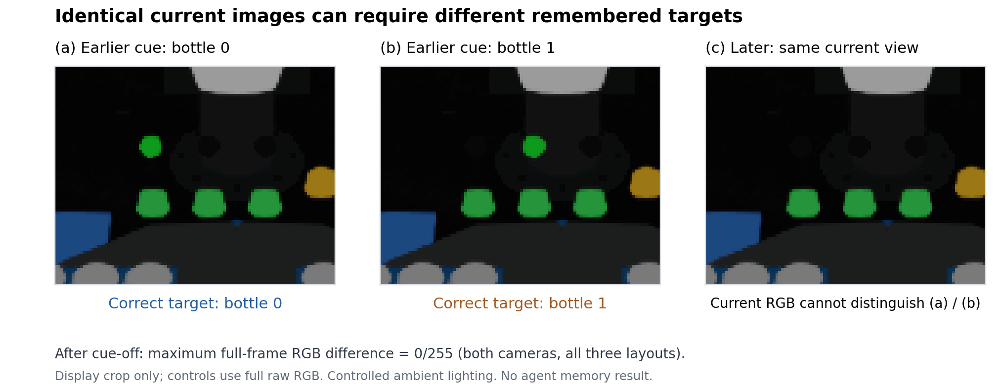

同一实验室与机器人后端，按任务激活物体和装置，保存实际采样的变体。
SIX TASKS · ACTUAL RECORDINGS
同一重建实验室中的六项任务
ACTUAL SIMULATION VIDEOS
重建场景中的连续任务
阶段按钮跳转两路录像。阶段快照保留全部 56 个刚体和 9 个关节系统的状态；这些快照不等于冷重建已通过。
M1 OBSERVATION CONTROL
T8：为什么必须记住提示

TASK CATALOG · ALL ATTEMPTS RETAINED
按任务推进，逐项采集
累计成功率以已记录的全部随机化尝试为分母，包含历史专家版本。各版本由原始记录和发布报告区分；专家校准、资格检查和像素门槛前缀单列，失败与报错全部保留。 粒子运行时无效或未核验的尝试不计为验收成功；原始测量保留。固定配置批次与历史累计统计分别列出。
T3 倾倒、T6 按键启停搅拌与 T7 端点停止属于工程任务，尚未进行化学标定。T8 使用受控恒定光照；三种布局的同布局不同提示对照，提示熄灭后的两路原始 RGB 最大像素差均为 0（门槛 2/255）。这是观测控制验收，模型记忆实验仍待开展。
HELD-OUT EVALUATION · DISTINCT EVIDENCE LEVELS
评测协议与公开观测可解性
评测集固定为每个任务 50 个 seed（1000–1049），不用于训练或调参。技能轨道只给公开指令、站位 A 图像和仿真时间；智能体决定拿哪个、何时按、何时停。支持思考时暂停，以及把思考延迟计入仿真时间的两种时钟。
下列 CPU 结果来自示意 RGB 环境，只验证接口和计时逻辑，不代表重建场景中的物理成功或安全。原生公开观测验收单列；尚未调用 LLM/VLM，也未训练策略。
SUPPLEMENTARY ASSETS · PHYSICS ADMISSION
ChemLab 补充资产：原生准入录像
读取资产验收记录…
以下录像来自独立的资产检查台：固定底座、静置 2 秒，再用小力推动被动关节。质量按碰撞代理体积估算，单位与质量均未标定；尚未通过 FR3 的 T5 新物体泛化评测。上方任务录像继续使用 A-Lab 重建实验室。
来源：MBZUAI/ChemLab-Assets，与 SafeLab 资产分开登记。Zirui Song, Jiadong Zhang, Jiahao Zhang, Xiaosong Ma, Xiaojun Chang, Xiuying Chen (2026)。资产及其展示采用 CC BY-NC 4.0，仅限非商业使用并须署名；上游代码为 MIT。我们的修改包括 URDF→USD、固定基座、估计惯量和被动阻尼。公开验收统计。
COLLECTION CONTRACT
每一条轨迹都可以复核
阶段完成就保存状态，继续执行后续动作；完整长任务和各阶段视频同时保留。
从已保存的状态、接触与事件重新计算物理、时间和安全判据，完整解码录像。